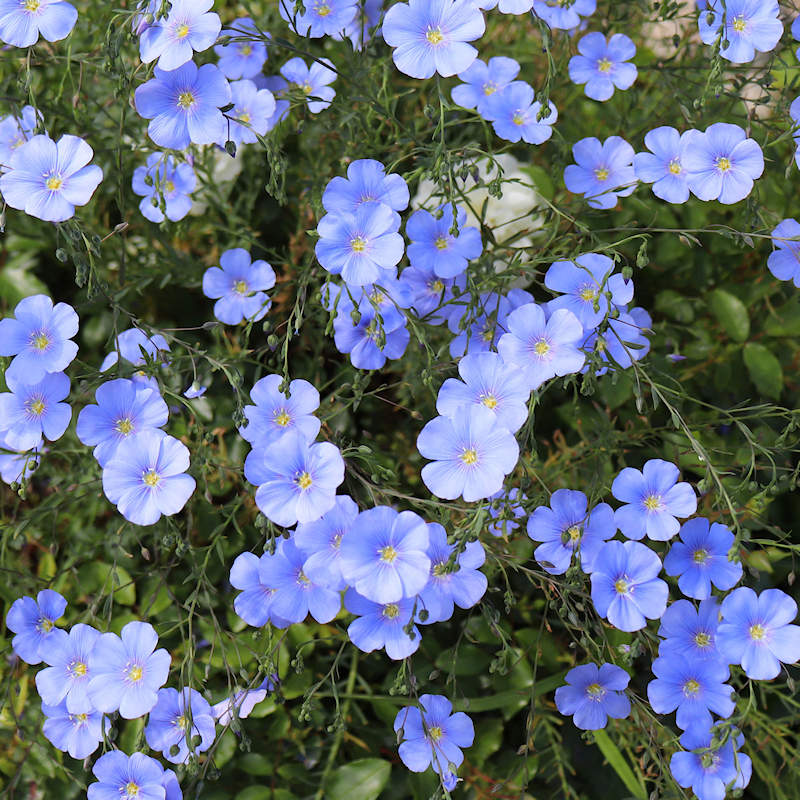

The Ephemeral Blue Flax
I am continually amazed at the beautiful, delicate Blue Flax that somehow took hold in my garden.
They are awash in color every morning, yet not a single
flower remains by the afternoon.
They are the very definition of ephemeral.